본 포스트는 서울대학교 컴퓨터공학부 System Programming(M1522.000800, Fall 2026) 강의 자료(1강 C Programming Examples)를 바탕으로, 강의를 처음 듣는 독자도 논리적 흐름을 따라갈 수 있도록 재구성한 것입니다. 다만 §0은 예제를 읽는 데 필요한 C 문법을 먼저 갖추기 위해 0강 Introduction의 마지막 절 “Overview of C Programming Language”(슬라이드 44–63)를 앞에 옮겨 둔 것입니다.
한 줄 요약 (TL;DR)
“두 개의 짧은 C 프로그램을 고쳐 쓰는 과정만으로, 시스템 프로그래밍이 요구하는 습관이 전부 드러납니다.”
첫 번째 예제는 표준 입력에서 문자를 읽어 알파벳·숫자·기타 문자의 개수를 세는 프로그램입니다. 이 사소해 보이는 코드가
getchar()는 왜char가 아니라int를 반환하는가, 문자와 숫자를 어떻게 비교할 수 있는가(ASCII), 그리고 그 비교를 어떻게 문자 집합에 중립적으로 바꿀 것인가(<ctype.h>)라는 세 가지 질문을 차례로 끌어냅니다. 두 번째 예제는 단어의 개수를 세는 프로그램인데, 여기서는 코드를 쓰기 전에 알고리즘을 먼저 설계한다는 원칙이 결정적 유한 상태 오토마타(DFA)라는 구체적 도구로 등장하고, 이어서 명명 상수(named constant), 함수 주석, 방어적 프로그래밍(defensive programming)이 하나씩 얹힙니다. 마지막으로 강의는 관점을 바꾸어, 우리가 무심코 치던gcc800 hello.c -o hello한 줄이 사실은 전처리 → 컴파일 → 어셈블 → 링크라는 네 단계의 지름길이었음을 각 단계의 중간 산출물(.i,.s,.o)을 직접 열어 보며 확인합니다.
0. C 언어 개요 (Overview of C Programming Language)
본격적인 예제로 들어가기 전에, 0강 Introduction의 마지막 절 “Overview of C Programming Language”(슬라이드 44–63)를 먼저 정리해 둡니다. 이 절은 C라는 언어가 어떤 목적으로 태어났고, 어떤 문법 요소로 이루어져 있는지를 한 번에 훑는 자리입니다. §1 이후의 예제들이 별다른 설명 없이 사용하는 타입 · 문장 · 함수 문법이 모두 여기에 모여 있으므로, 이 절을 앞에 두면 이후의 논의가 훨씬 매끄럽게 읽힙니다.
0.1 C의 역사 (History of C)
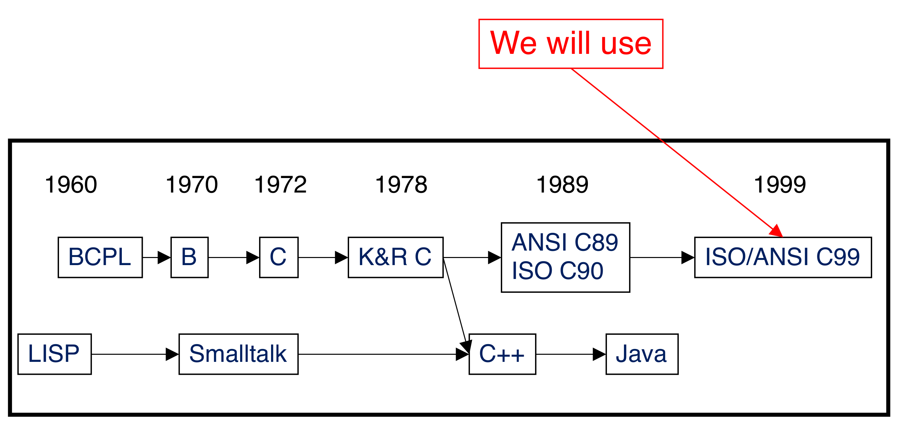
gcc800 스크립트가 -std=c99 옵션을 붙이는 이유가 바로 이 그림에 있습니다.0.2 C의 설계 목표 (Design goals of C)
C가 어떤 목적으로 설계되었는지가 이 언어의 성격을 거의 전부 설명합니다.
- 구조적 프로그래밍(structured programming)을 지원한다.
- Unix 운영체제와 그 도구들의 개발을 지원한다.
- Unix가 널리 퍼지면서 C도 함께 퍼졌습니다(As Unix became popular, so did C).
이 두 목표가 C에 남긴 결과는 다음과 같습니다.
- 시스템 수준 프로그래밍(system-level programming)에 적합합니다.
- 다만 응용 수준 프로그래밍(application-level programming)에도 쓰입니다.
- 저수준(Low-level) 언어입니다.
- 어셈블리어에 가깝고, 기계어에 가깝고, 하드웨어에 가깝습니다.
- 이식성보다 효율성(Efficiency over portability)을 우선합니다.
“이식성보다 효율성”이라는 설계 우선순위는 추상적인 구호가 아닙니다. §4에서 보게 될 c >= 97 && c <= 122 같은 코드가 바로 그 우선순위의 산물입니다 — 기계가 문자를 정수로 다룬다는 사실을 언어가 감추지 않기 때문에 그런 코드를 쓸 수 있고, 동시에 그래서 문자 집합이 바뀌면 깨집니다. C를 쓴다는 것은 이 거래를 받아들인다는 뜻이고, <ctype.h> 같은 표준 라이브러리는 그 거래의 대가를 필요한 곳에서만 되사는 장치입니다.
0.3 데니스 리치가 말하는 C (C Overview by Dennis Ritchie)
C와 Unix를 만든 데니스 리치(Dennis Ritchie, 1983년 튜링상 수상자)가 C를 어떻게 설명했는지를 인용한 슬라이드입니다.
- C는 “프로그래머를 결코 옭아매려 하지 않는(never attempts to tie a programmer down)” 언어였다.
- C는 “강력한 표현을 간결하고 압축적인 방식(terse, concise manner)으로 코딩하기를 좋아하는 시스템 프로그래머들에게 언제나 매력적이었다.”
- C는 “(이식성을 희생하는 대신) 그렇지 않았다면 어셈블리어를 써야 했을 여러 기계 수준 기능에 직접 접근(direct access to many machine-level features)”할 수 있게 해 주었다.
그리고 가장 유명한 자평이 이어집니다.
“C is quirky, flawed, and an enormous success.”
역사의 우연이 도움을 준 것은 분명하지만, C는 어셈블리어를 밀어낼 만큼 효율적이면서(efficient enough to displace assembly language), 동시에 다양한 환경에서 알고리즘과 상호작용을 기술할 만큼 충분히 추상적이고 유창한(sufficiently abstract and fluent to describe algorithms and interactions) 시스템 구현 언어에 대한 필요를 명백히 충족시켰다.
요약하면 C는 (거의) 모든 것을 프로그래밍할 수 있게 해 주는 범용적이고 유연하며 다재다능한 언어입니다.
- 응용 프로그램을 만들고(Make applications)
- 시스템 소프트웨어를 구축하며(Build system software, 예: 운영체제)
- 기계를 직접 제어합니다(Directly control machines).
0.4 Hello World
C 프로그램의 최소 형태입니다.
#include <stdio.h>
int main(void)
{
printf("Hello, world\n");
return 0;
}슬라이드는 이 짧은 코드의 각 부분에 주석을 달아 둡니다.
| 요소 | 역할 |
|---|---|
#include <stdio.h> |
표준 라이브러리에 대한 정보를 포함시킵니다 |
main() |
실행의 진입점(entry point of execution)이 되는 함수입니다 |
{ … } |
main의 문장(statement)들은 중괄호 안에 묶입니다 |
printf(...) |
main()이 printf() 함수를 호출해 문자열을 출력합니다 |
컴파일과 실행은 다음과 같습니다.
gcc800 hello.c
./a.outgcc800은 매크로다
슬라이드의 설명은 gcc800이 다음을 실행하는 매크로라는 것입니다.
gcc -Wall -Werror -pedantic -std=c99각 옵션의 의미는 다음과 같습니다.
-Wall: 흔한 경고를 모두 잡아냅니다(예: 사용하지 않은 변수, 도달할 수 없는 코드).-Werror: 경고를 오류로 취급합니다.-pedantic: C/C++ 표준을 엄격히 준수하도록 합니다.-std=c99: C99 표준을 따릅니다.
여러분의 코드가 경고나 오류를 내지 않도록 반드시 확인해야 합니다. 같은 도구를 §11과 §18에서 다시 다룹니다.
0.5 프로그래밍이란 무엇인가 (What is Programming?)
- 컴퓨터에게 무엇을 할지 지시하는 것(Instruct the computer what to do)입니다.
- 프로그램 = 상태(states) + 그 상태를 갱신하는 명령(commands that update the states)
그렇다면 프로그램을 어떻게 조직할 것인가? 슬라이드는 두 가지 방식을 대비시킵니다.
| 방식 | 언어 | 프로그램의 정의 | 특징 |
|---|---|---|---|
| 구조적 프로그래밍(Structured programming) | C | 서브루틴(subroutine)의 집합 | 서브루틴이 명확성을 높이고 개발 시간을 줄입니다 |
| 객체지향 프로그래밍(Object-oriented programming) | C++, Java | 객체 사이의 상호작용 | 각 객체가 인터페이스 함수(멤버 함수)를 통해 상태(멤버 변수)를 관리합니다 |
이 한 줄은 §10에서 다시 등장하는 “현재 상태 + 입력 문자 = 다음 상태 + 출력”의 일반형입니다. §6에서 단어 세기를 DFA로 설계하는 일이 갑작스러운 도약처럼 느껴지지 않는 이유가 여기에 있습니다 — 프로그램을 상태와 전이로 보는 관점은 애초에 프로그래밍의 정의 자체이고, DFA는 그 관점을 가장 엄밀하게 적어 둔 형식일 뿐입니다.
0.6 C의 변수 타입 (C Variable Types)
변수(variable)란 프로그램이 조작하는 메모리 영역에 붙인 이름이며, 모든 변수는 타입을 갖습니다.
char x = 'a';
int x = 10;
float x = 3.14;| 분류 | 타입과 크기 |
|---|---|
| 문자 타입(Character type) | char (8 bit) |
| 정수 타입(Integral type) | short (16 bit), int (32 bit), long (64 bit on 64-bit OS) |
| 부동소수점 타입(Floating point type) | float (32 bit), double (64 bit), long double (128 bit) |
| 범용 타입(Generic type) | void * (64 bit on 64-bit OS) |
슬라이드는 이 과목이 x86-64를 가정한다고 명시합니다.
char가 8비트라는 사실이 §2.3의 함정으로 이어집니다
char는 8비트, 즉 256가지 값만 표현할 수 있습니다. 그런데 getchar()는 정상적인 문자 256가지 전부와 입력의 끝(EOF)이라는 257번째 정보를 하나의 반환값으로 전달해야 합니다. 여기서 이미 답이 정해집니다 — 반환형이 char일 수는 없습니다. §2.3에서 이 문제를 자세히 다룹니다.
0.7 상수 · 배열 · 포인터 타입 (Constants, Array, Pointer Type)
상수(Constant)는 값이 변하지 않는 식별자입니다. 표현 방법은 세 가지입니다.
#define MAX 10
const int MAX = 10;
enum {MAX = 10};이 세 가지가 §8.2에서 명명 상수(named constant)라는 이름으로 다시 등장합니다.
배열(Array)은 같은(same) 타입인 원소들의 모음입니다.
char c[10];
double pi[5][2];
sizeof(pi)?포인터(Pointer)는 어떤 타입의 변수가 놓인 메모리 주소를 담습니다.
int *p;
void *k;
sizeof(p)? sizeof(k)?슬라이드가 sizeof(pi)?, sizeof(p)?, sizeof(k)?처럼 물음표로 남겨 둔 것은 청중에게 던지는 질문입니다. §0.6의 표를 적용하면 답이 나옵니다 — double이 64비트(8바이트)이므로 sizeof(pi)는 5 × 2 × 8 = 80바이트이고, 포인터는 64비트 OS에서 8바이트이므로 sizeof(p)와 sizeof(k)는 모두 8입니다. 가리키는 대상의 타입이 무엇이든 주소의 크기는 같다는 점이 요점입니다.
0.8 변수와 포인터 (Variables and Pointers)
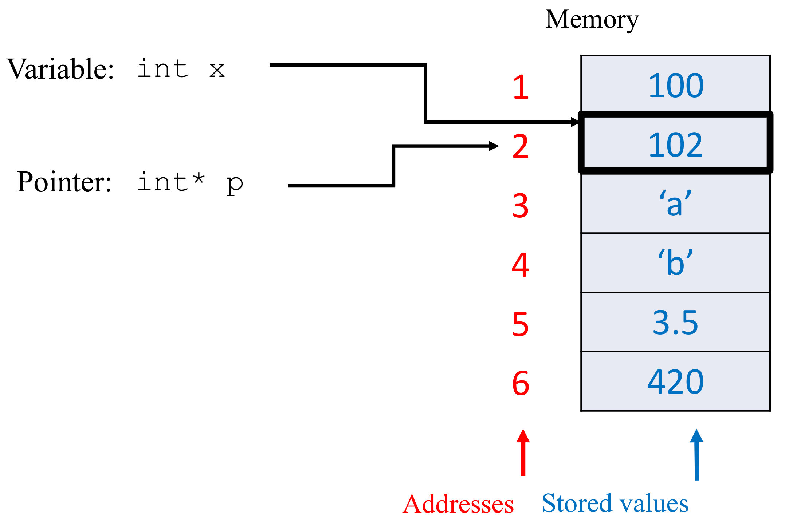
Variable: int x에서 나온 화살표는 주소 2번 칸을 직접 가리키고, 그 칸은 굵은 검은 테두리로 강조되어 있습니다 — 즉 변수 x는 그 칸 자체이며 값 102를 담고 있습니다. 반면 Pointer: int* p에서 나온 화살표는 값이 아니라 “주소 2”를 가리킵니다 — 포인터 p가 담고 있는 것은 데이터가 아니라 다른 변수의 위치라는 뜻입니다. 이 그림의 핵심은 주소와 값이 서로 다른 층위에 있고, 포인터는 값의 자리에 주소를 놓는 변수라는 점이며, 이 구분이 다음 회차 C Pointers의 출발점이 됩니다.0.9 문자열과 구조체 (Strings and Structures)
문자열(String)은 문자들의 모음입니다.
char *s = "hello world\n";
char s[20] = "SNU CSE00800";구조체(Structure)는 타입이 서로 다를(different) 수 있는 원소들의 모음입니다.
struct student {
int id;
char *name;
};배열과 구조체의 차이가 정확히 “같은 타입”과 “다를 수 있는 타입” 한 곳에 있다는 점이 §0.7과 나란히 읽으면 분명해집니다.
0.10 산술 · 논리 연산 (Arithmetic and Logic Operations)
- 산술 연산자(Arithmetic operators):
+,-,*,/,%, 단항- - 논리 연산자(Logic operators):
&&,||,! - 관계 연산자(Relational operators):
==,!=,>,<,>=,<= - 비트 연산자(Bitwise operators):
>>,<<,&,|,^ - 대입 연산자(Assignment operators):
=,*=,/=,+=,-=,<<=,>>=,^=,|=,%=
§2.2의 (c >= 97 && c <= 122) || (c >= 65 && c <= 90)은 관계 연산자와 논리 연산자를 함께 쓴 전형적인 예입니다.
0.11 문장 (Statements)
문장(statement)의 정의는 다음과 같습니다.
- 문장은 순차적으로 실행되는 C 프로그램의 조각입니다.
- 비형식적으로는 특정한 동작을 수행하는 명령 하나입니다.
- 보통
;(종결자, terminator)로 끝납니다.
대입(Assignment)
int i, j;
i = 10;
i = j = 0;if 문
if (i < 0)
statement1;
else
statement2;switch/case 문
switch (i) {
case 1:
statement1;
break;
case 2:
statement2;
break;
default:
statement3;
break;
}이 switch 골격이 §8.1부터 §8.4까지 단어 세기 프로그램의 뼈대로 그대로 쓰입니다. 슬라이드가 여기서 이미 default: 분기를 포함한 형태를 표준으로 보여 준다는 점도 눈여겨볼 만합니다 — §8.3에서 “빠진 것”으로 지적되는 바로 그 항목입니다.
0.12 반복문 (Loop Statements)
for 문
for (int i = 0; i < 10; i++){
statement 1;
statement 2;
}
statement 3;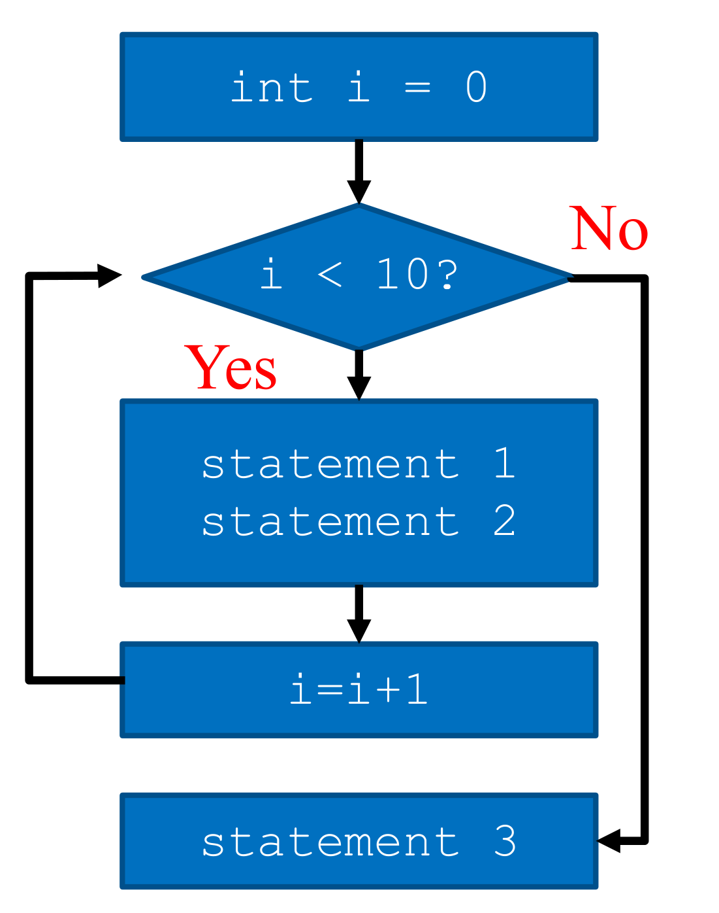
for 문의 실행 흐름을 나타낸 순서도입니다. 파란 직사각형은 실행되는 동작, 파란 마름모는 조건 판정, 검은 화살표는 제어 흐름입니다. 맨 위 int i = 0(초기화)에서 시작해 i < 10? 판정으로 내려가고, 빨간 “Yes” 경로를 타면 본문(statement 1, statement 2)을 실행한 뒤 i=i+1(증가)을 거쳐 다시 조건 판정으로 되돌아갑니다. 빨간 “No” 경로는 루프를 빠져나와 statement 3으로 갑니다. 이 그림이 보여 주는 요점은 초기화는 한 번, 조건 판정은 매 회차 시작 시, 증가는 본문 실행 뒤라는 for 문의 세 구성 요소의 실행 시점입니다.while 문과 do while 문
while (i < 10){
statement 1;
statement 2;
}
statement 3;do {
statement 1;
statement 2;
} while (i < 10)
statement 3;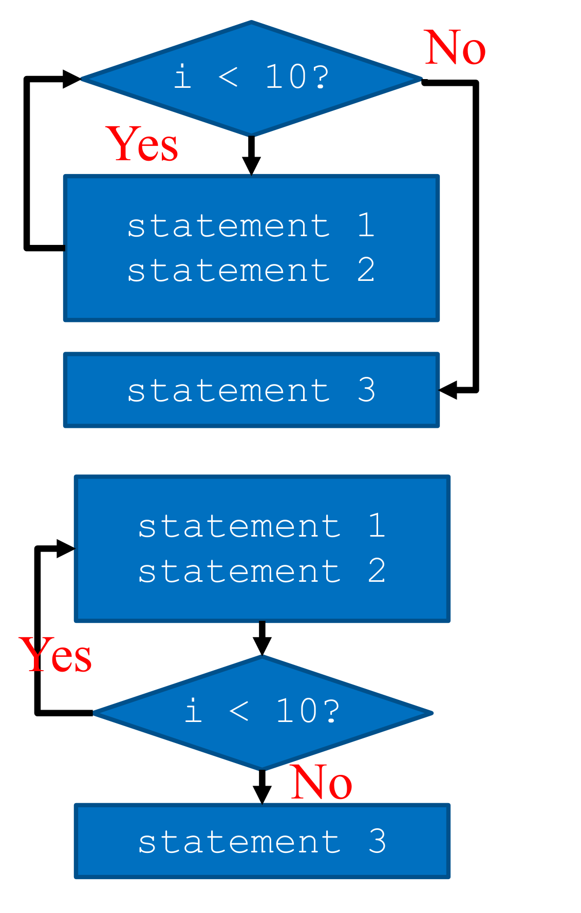
while 문(위)과 do while 문(아래)의 순서도를 나란히 놓은 그림입니다. 표기는 Figure 3과 같아 파란 마름모가 조건 판정, 파란 직사각형이 동작, 빨간 “Yes”/“No”가 분기 방향입니다. 두 순서도의 유일한 차이는 마름모와 직사각형의 순서입니다 — 위쪽 while은 조건 판정이 본문보다 먼저 오므로 조건이 처음부터 거짓이면 본문이 한 번도 실행되지 않고 곧바로 statement 3으로 갑니다. 아래쪽 do while은 본문이 판정보다 먼저 오므로 조건과 무관하게 최소 한 번은 반드시 실행됩니다. 두 그림을 겹쳐 보면 “판정을 어디에 두는가”라는 한 가지 선택이 두 반복문의 성격을 전부 결정한다는 것이 드러납니다.루프 제어
break;— 현재 루프나switch에서 빠져나갑니다.
while (i < 10) {
statement1;
statement2;
break;
}
statement3;continue;— 다음 회차의 시작으로 갑니다.
while (i < 10) {
statement1;
statement2;
continue;
}
statement3;goto SomeLabel;
§2.2의 while ((c = getchar()) != EOF)가 바로 이 while 문이며, 조건 판정이 본문보다 앞에 있으므로 입력이 처음부터 비어 있으면 루프 본문은 한 번도 실행되지 않습니다.
0.13 함수 정의와 호출 (Function Definition and Call)
반환문(return statement)을 갖는 함수 정의
int add(int x, int y) {
return x+y;
}함수 호출
int sum = add(3,5);0.14 그 밖의 문장 (Other Statements)
복합문(Compound Statements) — 여러 문장을 중괄호로 묶어 하나의 문장처럼 다룹니다.
{
statement1;
statement2;
}주석(Comments) — 읽는 사람을 위한 것이고, 기계는 무시합니다(for readers, ignored by machines).
/*
multiple
line
comment
*/// single line comment주석이 “기계가 무시하는 것”이라는 사실은 §13에서 실제로 확인됩니다 — 전처리 단계에서 주석이 제거된 hello.i가 그 증거입니다. 그리고 §9에서는 그 “읽는 사람을 위한 것”을 어떻게 써야 하는가가 별도의 주제로 다루어집니다.
0.15 예제 C 프로그램 (Example C Program)
지금까지의 요소를 모두 사용한 예제로, 화씨온도를 섭씨온도로 변환한 표를 출력하는 프로그램입니다. 슬라이드는 주석과 이름이 없는 버전과 있는 버전을 나란히 제시합니다.
주석 없이 (w.o/ comments)
#include <stdio.h>
int main(void)
{
float a, b;
int c, d, e;
c = 0;
d = 300;
e = 20;
for (a = c; a <= d; a = a + e) {
b = (5.0 / 9.0) * (a - 32.0);
printf("%3.0f %6.1f\n", a, b);
}
return 0;
}주석과 함께 (w/ comments)
#include <stdio.h>
/* print Fahrenheit-Celsius table for
fahr = 0, 20, …, 300 */
int main(void)
{
float fahr, celsius;
int lower, upper, step;
lower = 0;
upper = 300;
step = 20;
for (fahr = lower; fahr <= upper; fahr = fahr + step) {
celsius = (5.0 / 9.0) * (fahr - 32.0);
printf("%3.0f %6.1f\n", fahr, celsius);
}
return 0;
}두 코드는 기계 입장에서 완전히 동일합니다. 컴파일 결과도 같고, 출력도 같습니다. 달라진 것은 a, b, c, d, e가 fahr, celsius, lower, upper, step이 되었다는 것과 함수 위에 무엇을 하는 프로그램인지 적은 주석 한 덩어리뿐입니다.
그럼에도 아래쪽 코드에서는 celsius = (5.0 / 9.0) * (fahr - 32.0)이 곧바로 화씨-섭씨 변환 공식으로 읽히는 반면, 위쪽 코드의 b = (5.0 / 9.0) * (a - 32.0)은 무슨 계산인지 알 수 없습니다. 이름과 주석은 기계를 위한 것이 아니라 사람을 위한 것이라는 §0.14의 정의가, 첫 강의의 마지막 슬라이드에서 두 코드의 대비로 증명되는 셈입니다.
§4의 97 → 'a' → isalpha(c), §8의 0/1 → IN/OUT, §9의 how 주석 → what 주석은 모두 이 한 쌍의 슬라이드가 던진 문제의 변주입니다.
1. 이번 강의의 목표 (Goals of this Lecture)
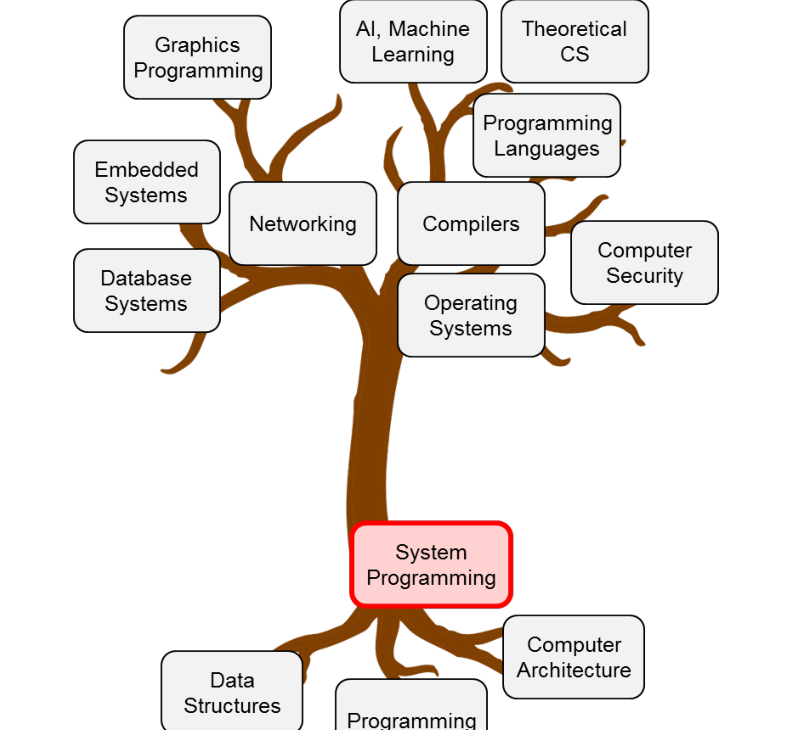
이번 강의가 다루는 내용은 크게 두 덩어리입니다.
- 두 개의 C 예제 코드로부터 배우기
- 단순한 문자 처리(character processing) 프로그램
- ASCII 코드 다루기
- 코드를 읽기 쉽고(readable) 이식 가능하게(portable) 만들기
- 명명 상수(named constants)
- 주석(comments)
- C 프로그램 빌드하기
- 전처리(Preprocessing)
- 컴파일(Compiling)
- 어셈블(Assembling)
- 링크(Linking)
앞의 절반은 “같은 일을 하는 코드를 어떻게 더 좋은 코드로 고쳐 쓸 것인가”에 관한 것이고, 뒤의 절반은 “그 코드가 어떤 경로를 거쳐 실행 파일이 되는가”에 관한 것입니다.
2. C 예제 코드 #1 (C Example Code #1)
2.1 문제 정의
첫 번째 예제의 요구사항은 다음과 같습니다.
표준 입력(standard input, 기본값은 키보드)에서 문자들을 읽어라. 입력 문자열에 포함된 영문 알파벳(
'a'..'z','A'..'Z')의 개수와 숫자('0'..'9')의 개수를 출력하라.
원본 슬라이드에는 대문자 범위가 'A'..'B'로 적혀 있습니다. 다만 이어지는 코드가 c >= 65 && c <= 90(즉 'A'부터 'Z'까지)을 검사하므로, 의도는 'A'..'Z'로 읽는 것이 맞습니다.
소스 파일은 count.c이고, 컴파일과 실행은 다음과 같이 합니다.
gcc800 -o count count.c
./count < count.c실행 결과는 이렇습니다.
# of alphabets: 253
# of digits: 4
# of other characters: 289여기서 <는 파일의 내용을 표준 입력으로 리다이렉션(redirect)하는 셸 연산자입니다. 즉 ./count < count.c는 “count.c 파일의 내용을 키보드 대신 count 프로그램의 입력으로 흘려보내라”는 뜻이며, 그 결과 이 프로그램은 자기 자신의 소스 코드를 세게 됩니다.
2.2 첫 번째 구현
#include <stdio.h>
int main(void)
{ //EOF == (int)-1 == 0XFFFFFFFF
int c;
int alphaCount = 0;
int digitCount = 0;
int othersCount = 0;
while ((c = getchar()) != EOF) {
if ((c >= 97 && c <= 122) || (c >= 65 && c <= 90))
alphaCount++;
else if (c >= 48 && c <= 57)
digitCount++;
else
othersCount++;
}
printf("# of alphabets: %d\n", alphaCount);
printf("# of digits: %d\n", digitCount);
printf("# of other characters: %d\n", othersCount);
return 0;
}구조 자체는 단순합니다. getchar()로 한 문자씩 읽어 EOF가 나올 때까지 반복하고, 읽은 값의 범위에 따라 세 개의 카운터 중 하나를 증가시킵니다.
while ((c = getchar()) != EOF)라는 관용구도 눈여겨볼 만합니다. C에서 대입식(assignment expression)은 대입된 값을 그대로 결과로 갖기 때문에, “읽어서 c에 넣고, 그 값을 EOF와 비교한다”는 두 동작이 한 줄에 들어갑니다. 바깥 괄호는 =가 !=보다 우선순위가 낮아서 반드시 필요합니다.
2.3 왜 1바이트 문자에 4바이트 int를 쓰는가
이 코드에서 가장 먼저 걸리는 지점은 문자를 담는 변수 c가 char가 아니라 int로 선언되어 있다는 것입니다. 슬라이드는 이 줄에 화살표를 달고 묻습니다 — “Why int (4 bytes) for 1 byte char?”
답의 열쇠는 코드 첫 줄의 주석에 있습니다.
//EOF == (int)-1 == 0XFFFFFFFFgetchar()가 int를 반환하는 이유
getchar()는 읽은 문자와 입력의 끝(EOF)이라는 두 종류의 정보를 하나의 반환값으로 전달해야 합니다. 그런데 1바이트로 표현 가능한 값은 256가지뿐이므로, 그 안에서 EOF 표식을 하나 떼어 오면 어떤 정상적인 바이트 값 하나를 EOF와 구별할 수 없게 됩니다. 그래서 C 표준 라이브러리는 getchar()의 반환형을 int로 두고, 정상 문자에는 0–255를, 입력의 끝에는 그 범위 밖의 값인 EOF(= (int)-1)를 배정합니다. 받는 쪽 변수도 int여야 이 구별이 유지됩니다.
주석의 0XFFFFFFFF는 -1을 32비트 2의 보수로 적은 것입니다. 만약 c를 char로 선언하면 이 값이 1바이트로 잘려 0xFF가 되는데, 이는 확장 문자 집합의 정상적인 바이트 값과 구별되지 않습니다. 타입 하나를 잘못 고르면 루프가 조기에 끝나거나 영영 끝나지 않을 수 있다는 것이, 시스템 프로그래밍이 타입 폭(width)에 민감한 첫 번째 사례입니다.
2.4 문자를 숫자와 비교한다?
두 번째로 걸리는 지점은 조건식입니다.
if ((c >= 97 && c <= 122) || (c >= 65 && c <= 90))c는 문자를 담고 있는데, 비교 대상은 97, 122, 65, 90이라는 정수입니다. 슬라이드는 여기에도 화살표를 달고 답을 함께 적어 둡니다 — “How is character compared to number? ASCII code!”
즉 C에서 문자란 애초에 작은 정수이고, 그 정수와 글자 모양 사이의 대응표가 바로 다음 절에서 볼 문자 집합입니다.
3. ASCII: 널리 쓰이는 문자 집합 (ASCII: a Popular Character Set)
ASCII는 American Standard Code for Information Interchange의 약자로, 문자와 정수 코드 사이의 대응을 정한 표준입니다.
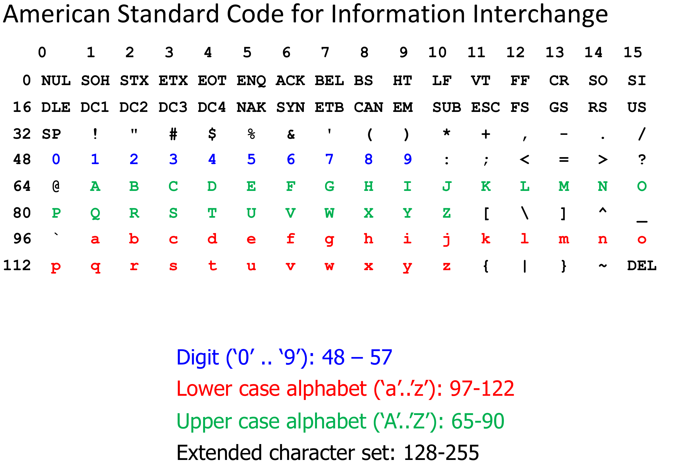
A는 행 64, 열 1이므로 65입니다. 처음 두 행(0–31)의 NUL, SOH, …, US는 제어 문자(control character)이고, 32는 공백(SP)입니다. 색으로 강조된 세 구간이 앞 절의 조건식에 그대로 대응합니다 — 파란색 숫자 0–9는 48–57, 초록색 대문자 A–Z는 65–90, 빨간색 소문자 a–z는 97–122입니다. 표 아래에는 이 세 범위와 함께 확장 문자 집합(extended character set)이 128–255임이 정리되어 있습니다. 이 그림이 있어야 비로소 c >= 97 && c <= 122가 “소문자인가?”를 묻는 문장으로 읽힙니다.정리하면 다음 세 구간이 핵심입니다.
| 구간 | 범위 | 코드값 |
|---|---|---|
| 숫자(Digit) | '0' .. '9' |
48 – 57 |
| 소문자(Lower case alphabet) | 'a' .. 'z' |
97 – 122 |
| 대문자(Upper case alphabet) | 'A' .. 'Z' |
65 – 90 |
| 확장 문자 집합(Extended character set) | — | 128 – 255 |
세 구간이 모두 연속(contiguous)이라는 점이 중요합니다. 덕분에 “소문자인가?”라는 질문이 두 번의 비교(c >= 97 && c <= 122)로 끝납니다. 동시에 이는 ASCII라는 특정 문자 집합에 코드가 의존하게 되는 원인이기도 한데, 이 문제는 §4에서 다시 다룹니다.
4. ASCII의 성질을 이용한 프로그램 (Program using ASCII characteristics)
4.1 극단적인 예시
문자가 정수라는 사실을 끝까지 밀고 나가면 어떤 코드가 나오는지를 보여 주는 예제입니다. 슬라이드는 시작부터 경고합니다 — “Warning: this code is ugly and unreadable – just here for educational purposes.”
#include <stdio.h>
int main(void)
{
printf("characters: %c %c %c\n", 97, 'a' + 3, 122);
printf("characters: %c %c\n", 'C' + 'a' - 'A', 'c' - ('a' - 'A'));
return 0;
}%c 변환 지정자는 인자로 받은 정수를 그 코드값에 해당하는 문자로 출력합니다. 출력 결과는 다음과 같습니다.
characters a d z
characters c C4.2 각 표현식이 하는 일
| 표현식 | 계산 | 출력 문자 |
|---|---|---|
97 |
97 | a |
'a' + 3 |
97 + 3 = 100 | d |
122 |
122 | z |
'C' + 'a' - 'A' |
67 + 97 − 65 = 99 | c |
'c' - ('a' - 'A') |
99 − (97 − 65) = 99 − 32 = 67 | C |
'a' - 'A' = 32라는 마법
ASCII에서 대문자 구간(65–90)과 소문자 구간(97–122)은 정확히 32만큼 떨어진 채 같은 순서로 배열되어 있습니다. 그래서 'a' - 'A'는 어떤 글자에 대해서도 항상 32이고, 이 값을 더하면 대문자가 소문자로, 빼면 소문자가 대문자로 바뀝니다. 두 번째 printf의 두 표현식이 각각 그 변환을 수행하고 있습니다. 다만 이 트릭이 성립하는 이유는 ASCII가 그렇게 생겼기 때문일 뿐, C 언어가 보장하는 성질이 아닙니다.
즉 이 코드는 “동작한다”는 점에서는 완벽하지만, 읽는 사람이 코드표를 옆에 펴 놓아야 의미를 알 수 있고, 다른 문자 집합에서는 깨진다는 두 가지 문제를 안고 있습니다. 남은 두 절은 이 두 문제를 차례로 걷어냅니다.
4.3 1차 개선: 문자 리터럴 사용하기
첫 번째 개선은 숫자를 문자 리터럴(character literal)로 바꾸는 것입니다.
#include <stdio.h>
int main(void)
{
int c;
int alphaCount = 0;
int digitCount = 0;
int othersCount = 0;
while ((c = getchar()) != EOF) {
if ((c >= 'a' && c <= 'z') || (c >= 'A' && c <= 'Z'))
alphaCount++;
else if (c >= '0' && c <= '9')
digitCount++;
else
othersCount++;
}
printf("# of alphabets: %d\n", alphaCount);
printf("# of digits: %d\n", digitCount);
printf("# of other characters: %d\n", othersCount);
return 0;
}이제 c >= 'a' && c <= 'z'는 코드표 없이도 “소문자 범위인가?”로 읽힙니다. 슬라이드의 평가는 다음과 같습니다 — “Better readability, but has dependency on ASCII code.”
가독성은 얻었지만 이식성은 얻지 못했다는 뜻입니다. 이 코드가 옳으려면 여전히 'a'부터 'z'까지가 코드값 상에서 연속이고 오름차순이어야 하는데, 그것은 ASCII의 성질이지 C의 보장이 아니기 때문입니다.
4.4 2차 개선: <ctype.h>로 문자 집합에서 독립하기
두 번째 개선은 범위 비교 자체를 표준 라이브러리 함수로 대체하는 것입니다.
#include <stdio.h>
#include <ctype.h>
int main(void)
{
int c;
int alphaCount = 0;
int digitCount = 0;
int othersCount = 0;
while ((c = getchar()) != EOF) {
if (isalpha(c))
alphaCount++;
else if (isdigit(c))
digitCount++;
else
othersCount++;
}
printf("# of alphabets: %d\n", alphaCount);
printf("# of digits: %d\n", digitCount);
printf("# of other characters: %d\n", othersCount);
return 0;
}isalpha()와 isdigit()는 <ctype.h>가 제공하는 함수로, 슬라이드의 설명대로 “문자 집합의 종류에 중립적인(neutral to the types of character set)” C 라이브러리 함수입니다. 어떤 문자 집합을 쓰는 처리계인지는 라이브러리 구현이 알아서 처리하므로, 우리 코드는 “이 문자가 알파벳인가?”라는 의도만 적으면 됩니다.
| 버전 | 조건식 | 가독성 | 이식성 |
|---|---|---|---|
| 원본 | c >= 97 && c <= 122 |
나쁨 | ASCII 의존 |
| 문자 리터럴 | c >= 'a' && c <= 'z' |
좋음 | ASCII 의존 |
<ctype.h> |
isalpha(c) |
좋음 | 독립적 |
세 코드는 ASCII 환경에서 완전히 같은 결과를 냅니다. 그럼에도 마지막 버전을 택하는 이유는 결과가 달라서가 아니라, 의도가 코드에 적혀 있고 환경 가정이 코드에서 사라졌기 때문입니다.
5. C 예제 코드 #2 (C Example Code #2)
두 번째 예제는 단어 세기(word counting)입니다. 표준 입력으로 들어온 텍스트에서 단어의 개수를 셉니다.
- 단어(word)의 정의: 공백이 아닌 문자들의 연속(a sequence of non-space characters)
- 공백 문자(space character):
' ','\t','\n'등 - 예:
"I am a boy"는 4개의 단어("I","am","a","boy")
5.1 접근 방법: 상태 추적
문제를 어떻게 풀 것인가에 대해 슬라이드는 곧바로 상태 추적(state tracking)을 제시합니다.
- state1: 단어 안(inside-a-word)
- state2: 단어 밖(outside-a-word)
그리고 결정적인 관찰이 이어집니다.
단어의 개수 = 프로그램이 state2(단어 밖)에서 state1(단어 안)으로 전환한 횟수
이 정의가 왜 옳은지 잠깐 짚어 두면 좋습니다. 모든 단어는 반드시 “밖 → 안” 전환으로 시작하고, 한 단어를 읽는 동안에는 계속 “안”에 머물러 있으므로 그 전환은 단어마다 정확히 한 번씩 일어납니다. 따라서 전환 횟수를 세면 곧 단어 수가 됩니다. “단어의 첫 글자를 만난 순간을 센다”는 규칙을 상태의 언어로 다시 적은 셈입니다.
6. 결정적 유한 상태 오토마타 (Deterministic Finite State Automata, DFA)
앞 절의 “상태”라는 아이디어에는 정식 이름이 있습니다.
DFA는 유한 개의 상태(states), 입력 문자로 이름 붙은 전이(transitions labeled by input characters), 그리고 선택적인 동작(optional actions)으로 구성됩니다.
- 초기 상태(initial state)는 바깥 공간에서 들어오는 화살표
→로 표시합니다. - 최종 상태(final state, 또는 accepting state)가 존재할 수 있으며, 보통 이중 원(double circle)으로 그립니다.
단어 세기 문제를 이 언어로 옮기면 다음 그림이 됩니다.
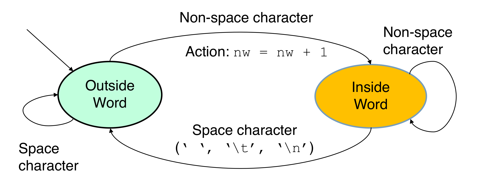
Action: nw = nw + 1이라는 동작이 붙어 있습니다 — 단어 수 nw가 증가하는 곳은 오직 이 전이 하나뿐이라는 점이 이 그림의 핵심 메시지입니다. 아래쪽 큰 곡선은 Inside → Outside 전이로 공백 문자(' ', '\t', '\n')일 때 일어나며 동작이 없습니다. 양쪽 끝의 작은 자기 루프(self-loop)는 같은 상태에 머무는 경우 — 왼쪽은 공백이 이어지는 동안 Outside에, 오른쪽은 비공백이 이어지는 동안 Inside에 머무는 경우 — 를 나타내며, 역시 동작이 없으므로 한 단어를 여러 번 세는 일이 구조적으로 불가능합니다. 이 그림에는 이중 원이 없는데, 단어 세기는 입력을 받아들이거나 거부하는 문제가 아니라 끝까지 읽으며 부수 효과(카운터 증가)를 누적하는 문제이기 때문입니다.이 그림이 주는 실질적인 이득은 구현 이전에 정확성을 확인할 수 있다는 점입니다. “단어를 두 번 세지 않을까?”, “맨 앞에 공백이 여러 개 오면?”, “줄바꿈으로 끝나면?” 같은 질문이 모두 전이가 그려져 있는지 없는지로 환원됩니다.
7. 더 많은 DFA 예시 (More DFA Examples)
DFA가 단어 세기에만 쓰이는 도구가 아님을 보여 주는 두 예시입니다.
7.1 문자 스트림에서 “SNUCSE” 찾아내기
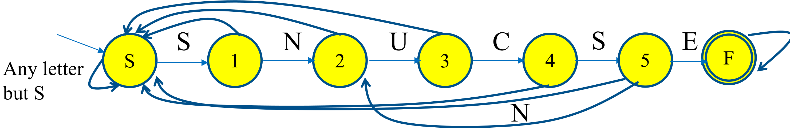
S, N, U, C, S, E를 받아 S → 1 → 2 → 3 → 4 → 5 → F로 나아갑니다. 굵은 곡선들은 패턴이 어긋났을 때 되돌아가는 실패 전이(backward transition)입니다. 시작 상태의 “Any letter but S” 자기 루프는 S가 아닌 글자를 계속 무시한다는 뜻이고, 아래쪽 N 표시가 붙은 곡선처럼 중간에 어긋나도 처음이 아니라 이미 일치한 접두사에 해당하는 상태로 되돌아가는 전이가 그려져 있습니다. 슬라이드는 이 그림이 완전하지 않음을 명시합니다 — 상태 1, 2, 3, 5에서 입력 S를 받았을 때 상태 1로 가는 전이 하나가 빠져 있습니다. 이 누락된 전이는 “SS NUCSE”처럼 S가 겹쳐 나올 때 필요합니다.여기서 굳이 실패 전이를 촘촘히 그리는 이유는, DFA가 “결정적(deterministic)”이려면 모든 상태에서 모든 입력에 대해 갈 곳이 정확히 하나씩 정해져 있어야 하기 때문입니다. 슬라이드가 빠진 전이를 직접 언급한 것도 같은 맥락입니다.
7.2 정수 검출하기
두 번째 예시는 입력이 정수인지 판별하는 DFA입니다. 검출하려는 패턴은 정규 표현식으로 다음과 같이 적힙니다.
0 or [+-]?[1-9][0-9]*표기법의 의미는 다음과 같습니다.
[1-9]는 1 또는 2 또는 …, 9를 뜻합니다.x*는 문자x의 0회 이상 반복(zero or more repetition)을 뜻합니다.x?는 문자x의 0회 또는 1회 반복(zero or one repetition)을 뜻합니다.
즉 이 패턴은 “0 하나” 또는 “부호가 있어도 되고 없어도 되며, 첫 자리는 1–9이고, 그 뒤로 0–9가 얼마든지 이어지는 수”입니다. 첫 자리를 [1-9]로 제한한 것은 007 같은 불필요한 선행 0을 배제하기 위한 것입니다.
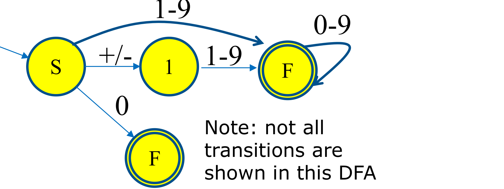
1-9는 부호 없이 곧바로 1–9로 시작하는 경우로 F에 도달하고, 가운데 +/-는 부호를 하나 읽고 상태 1로 간 뒤 다시 1-9로 F에 도달하며, 아래쪽 0은 “0 하나”만으로 이루어진 수를 위한 별도의 최종 상태로 갑니다. F의 자기 루프 0-9는 첫 자리 이후로는 0을 포함한 어떤 숫자든 몇 개든 올 수 있음을 나타내며, 이것이 정규 표현식의 [0-9]*에 해당합니다. 그림 오른쪽 아래에 적힌 “Note: not all transitions are shown in this DFA”가 말하듯, 여기서도 잘못된 입력을 받았을 때의 거부 전이는 생략되어 있습니다.정규 표현식의 각 조각이 그림의 각 전이에 그대로 대응한다는 점을 확인해 두면 좋습니다. [+-]?는 S에서 상태 1로 가는 건너뛸 수 있는 한 걸음이고, [1-9]는 F로 들어가는 문턱이며, [0-9]*는 F의 자기 루프입니다.
8. 명명 상수를 표현하는 세 가지 방법 (3 Ways to Represent Named Constants)
8.1 먼저, 매직 넘버로 쓴 구현
§6의 DFA를 그대로 코드로 옮기면 다음과 같습니다.
#include <stdio.h>
#include <ctype.h>
int main(void)
{
int c, nWords = 0, state = 1;
while ((c = getchar()) != EOF) {
switch (state) {
case 0:
if (isspace(c)) state = 1;
break;
case 1:
if (!isspace (c)) { state = 0; nWords++;}
break;
}
}
printf("# of words: %d\n", nWords);
return 0;
}DFA와의 대응은 정확합니다. state가 현재 상태, switch의 각 case가 상태별 처리, 그리고 nWords++는 오직 case 1(단어 밖)에서 비공백 문자를 만나 state = 0(단어 안)으로 넘어가는 그 한 자리에만 붙어 있습니다. 공백 문자를 처리하는 <ctype.h>의 isspace()를 쓴 덕분에 ASCII 의존도 없습니다.
그럼에도 슬라이드는 두 상수에 화살표를 달고 지적합니다 — “0, 1 are magic numbers: use named constants!”
0과 1은 코드 어디에도 “단어 안”과 “단어 밖”이라는 뜻이 적혀 있지 않습니다. 초기값이 state = 1인데 case 1이 아래쪽에 있어 읽는 순서와 실행 순서가 어긋나고, 두 값을 실수로 바꿔 쓰더라도 컴파일러는 아무 말도 하지 않습니다. 의미가 코드가 아니라 작성자의 머릿속에만 있는 상태입니다.
8.2 세 가지 표현 방법
슬라이드는 상수에 이름을 붙이는 방법을 세 가지로 정리합니다.
| 방법 | 문법 | 예시 |
|---|---|---|
| 열거형(enum) | enum VarName {CONST1, CONST2, …}; |
enum DFAState {IN, OUT}; |
매크로(#define) |
#define ConstName value |
#define IN 0 / #define OUT 1 |
const 변수 |
const int ConstName = value; |
const int IN = 0; / const int OUT = 1; |
각각에 대해 슬라이드가 덧붙인 설명은 다음과 같습니다.
enum: 값을 직접 적지 않아도 됩니다.IN이 0에서 시작하고OUT = (IN + 1) = 1로 자동으로 매겨집니다.#define:"ConstName"이 전처리(preprocessing) 단계에서"value"로 치환됩니다. 여기서 언급된 전처리가 무엇인지는 §12 이후에서 직접 확인하게 됩니다.const int: 값을 바꿀 수 없는 변수로 선언합니다.
8.3 명명 상수를 적용한 코드 — 아직 빠진 것
#include <stdio.h>
#include <ctype.h>
enum DFAState {IN, OUT};
int main(void)
{
int c, nWords = 0;
enum DFAState state = OUT;
while ((c = getchar()) != EOF) {
switch (state) {
case IN:
if (isspace(c)) state = OUT;
break;
case OUT:
if (!isspace (c)) { state = IN; nWords++;}
break;
}
}
printf("# of words: %d\n", nWords);
return 0;
}state = OUT이라는 초기화만 읽어도 “단어 밖에서 시작한다”는 것이 드러나고, case IN / case OUT은 §6의 상태 전이도와 이름까지 일치합니다. 변수의 타입도 int가 아니라 enum DFAState로 좁혀졌습니다.
그런데 슬라이드는 여기서 “Anything missing?”이라고 다시 묻고, 두 가지를 답으로 제시합니다.
main함수에 대한 주석(Comment on the main function)switch문의defaultcase
8.4 주석과 방어적 프로그래밍을 더한 최종본
#include <stdio.h>
#include <ctype.h>
#include <assert.h>
enum DFAState {IN, OUT};
/* count and print the number of words in input */
int main(void)
{
int c, nWords = 0; enum DFAState state = OUT;
while ((c = getchar()) != EOF) {
switch (state) {
case IN:
if (isspace(c)) state = OUT;
break;
case OUT:
if (!isspace (c)) { state = IN; nWords++;}
break;
default:
assert(0); /* error */
break;
}
}
printf("# of words: %d\n", nWords);
return 0;
}두 가지가 추가되었습니다.
- 함수 주석:
/* count and print the number of words in input */. 슬라이드의 지침은 “주석은 ’어떻게(how)’가 아니라 ’무엇(what)’에 초점을 맞춰야 한다”입니다. 이 원칙은 §9에서 좋은 예와 나쁜 예를 나란히 놓고 다시 다룹니다. defaultcase:<assert.h>를 포함하고assert(0)을 호출합니다.assert(0)은 조건이 항상 거짓이므로 이 분기에 도달하는 즉시 프로그램을 중단시킵니다.
슬라이드의 설명은 “state != IN && state != OUT인 오류 상황을 방어한다”는 것입니다. 논리적으로 state는 enum DFAState 타입이므로 그 두 값 이외를 가질 수 없어야 하고, 따라서 default 분기는 결코 실행되지 않아야 하는 코드입니다. 그럼에도 굳이 쓰는 이유는, 언젠가 그 “있을 수 없는 일”이 실제로 일어났을 때 조용히 잘못된 답을 내놓는 대신 정확히 그 지점에서 멈추게 하기 위해서입니다. 오류를 없애 주는 장치가 아니라, 오류가 처음 발생한 위치를 알려 주는 장치입니다.
9. 함수에 대한 주석 (Comment on Function)
- 모든 함수에 주석을 작성해야 합니다. 슬라이드가 강조하듯, 시스템 프로그래밍 과목에서 좋은 성적을 받으려면 이는 필수(Required)입니다.
슬라이드는 같은 함수에 대한 두 가지 주석을 나란히 놓고 비교합니다.
“It reads a character from stdin and checks if it’s a non-space character. If so, the program state moves to state”IN” and increment the counter. If it’s a space character, the state moves to OUT. It keeps on reading the input until EOF and prints out the word counter”
(표준 입력에서 문자를 하나 읽어 비공백 문자인지 확인한다. 그렇다면 프로그램 상태가 “IN”으로 옮겨 가고 카운터를 증가시킨다. 공백 문자라면 상태가 OUT으로 옮겨 간다. EOF까지 입력을 계속 읽고 단어 카운터를 출력한다.)
“Count the number of words in input from stdin and print it out”
(표준 입력의 단어 개수를 세어 출력한다.)
훨씬 단순하고, 이해하거나 유지보수하기 쉽습니다(Much simpler and easy to understand/maintain).
두 주석의 결정적인 차이는 구현이 바뀌었을 때 어떻게 되는가입니다. 나쁜 주석은 코드를 그대로 문장으로 옮겼기 때문에, 상태 이름 하나만 바꿔도 곧바로 거짓말이 됩니다. 반면 좋은 주석은 함수가 약속하는 계약(contract)만을 적었으므로, DFA를 쓰든 다른 방식을 쓰든 여전히 참입니다. 게다가 나쁜 주석은 코드를 읽으면 알 수 있는 내용을 반복할 뿐이라, 정작 “이 함수를 왜 부르는가”라는 호출자가 필요로 하는 정보는 담고 있지 않습니다.
10. C 예제 #2 요약 (C Example #2 Summary)
두 번째 예제에서 얻은 교훈을 슬라이드는 세 덩어리로 정리합니다.
- 코드를 쓰기 전에 알고리즘을 설계하라 (Design an algorithm before writing code)
- 그것이 복잡도를 줄여 줍니다.
- 이번 예제의 설계 원리는 한 줄로 요약됩니다 — 현재 상태 + 입력 문자 = 다음 상태 + 출력(Current state + input char = next state + output)
- 코드 가독성을 높여라 (Improve code readability)
- 매직 넘버를 피하라(Avoid magic numbers)
- 명명 상수가 유용하다 (
enum,#define,const)
- 주석과 방어적 프로그래밍 (Comments and defensive programming)
- 함수 수준 주석은 ’무엇’에 집중합니다.
- 함수 내부 주석(intra-function comments)은 보통 개별 코드 줄을 설명합니다.
- 방어적 프로그래밍은 바람직합니다.
- 그것은 디버깅 시간을 크게 줄여 줍니다.
- 함수 수준 주석은 ’무엇’에 집중합니다.
“현재 상태 + 입력 문자 = 다음 상태 + 출력”이라는 한 줄이 특히 중요합니다. 이는 §6에서 그린 상태 전이도를 그대로 문장으로 옮긴 것이며, DFA로 설계한다는 것은 곧 이 형태의 표를 완성한다는 뜻임을 말해 줍니다. 코드는 그 표를 switch 문으로 옮겨 적은 결과일 뿐입니다.
11. C 프로그램 빌드하기 (Building a C Program)
여기서부터 강의는 관점을 완전히 바꿉니다. 지금까지가 “어떤 코드를 쓸 것인가”였다면, 이제부터는 “그 코드가 어떻게 실행 파일이 되는가”입니다.
출발점은 가장 단순한 프로그램입니다.
#include <stdio.h>
int main(void)
{
/* Write "hello, world\n" to stdout. */
printf("hello, world\n");
return 0;
}이 hello.c의 성격은 다음과 같습니다.
- 소스 코드(Source code)
- C 언어(C language)
- 전처리기 지시자(preprocessor directives)를 포함합니다 — 여기서는
#include <stdio.h>가 그것입니다.
컴파일하고 실행하면 이렇습니다.
gcc800 hello.c -o hello
./hellohello, worldgcc800이란
gcc800은 다음 명령을 실행하는 스크립트(script)입니다.
gcc -Wall -Werror -pedantic -std=c99이 옵션들이 각각 무엇을 하는지는 §18에서 다시 다룹니다.
12. 실행 파일을 만드는 단계 (Steps to Make Executable File)
gcc800 hello.c -o hello 한 줄 뒤에서는 실제로 네 개의 프로그램이 차례로 동작합니다.
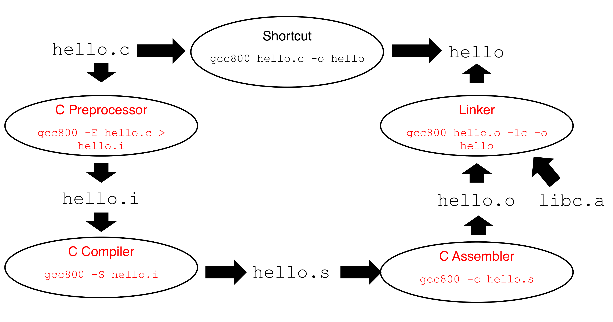
hello.c에서 실행 파일 hello까지의 빌드 파이프라인입니다. 타원은 처리 단계, 타원 안의 빨간 글씨는 그 단계를 직접 실행하는 명령, 굵은 검은 화살표는 파일의 흐름이고, 화살표 사이의 고정폭 글씨(hello.i, hello.s, hello.o)가 각 단계의 중간 산출물입니다. 왼쪽 위 hello.c에서 시작해 반시계 방향이 아니라 왼쪽 열을 따라 아래로 내려간 뒤 오른쪽 열을 따라 위로 올라오는 순서로 읽습니다 — C Preprocessor(gcc800 -E hello.c > hello.i) → hello.i → C Compiler(gcc800 -S hello.i) → hello.s → C Assembler(gcc800 -c hello.s) → hello.o → Linker(gcc800 hello.o -lc -o hello) → hello. 오른쪽 아래에서 링커로 들어오는 굵은 대각선 화살표는 표준 C 라이브러리 libc.a로, 우리 소스에는 없는 printf()의 정의가 여기서 합류합니다. 맨 위 가운데 타원 “Shortcut”(gcc800 hello.c -o hello)은 이 네 단계를 한 번에 수행하는 지름길이며, 평소 우리가 치는 명령이 사실은 이 전체 경로를 축약한 것임을 보여 줍니다.각 단계를 명령 단위로 정리하면 다음과 같습니다.
| 단계 | 명령 | 입력 → 출력 |
|---|---|---|
| 전처리(C Preprocessor) | gcc800 -E hello.c > hello.i |
hello.c → hello.i |
| 컴파일(C Compiler) | gcc800 -S hello.i |
hello.i → hello.s |
| 어셈블(C Assembler) | gcc800 -c hello.s |
hello.s → hello.o |
| 링크(Linker) | gcc800 hello.o -lc -o hello |
hello.o + libc.a → hello |
| 지름길(Shortcut) | gcc800 hello.c -o hello |
hello.c → hello |
이어지는 네 절에서는 각 단계의 산출물을 하나씩 열어 봅니다. 특히 printf()의 정의가 어느 단계까지 비어 있는지를 따라가면 링커가 왜 필요한지가 자연스럽게 드러납니다.
13. C 코드 전처리 (Preprocess C Code)
첫 단계인 C 전처리기(C Preprocessor)를 gcc800 -E hello.c > hello.i로 실행하면 hello.i가 나옵니다.
…
int printf(char *format, …);
…
int main(void)
{
printf("hello, world\n");
return 0;
}hello.i의 성격은 다음과 같습니다.
- 소스 코드(Source code)이며 여전히 C 언어입니다.
printf()함수의 선언(declaration)을 포함합니다.printf()함수의 정의(definition)는 여전히 없습니다.- 주석이 제거되었습니다(Remove comments).
즉 전처리기가 한 일은 #include <stdio.h>라는 한 줄을 stdio.h 파일의 내용으로 통째로 치환하고, 주석을 걷어낸 것입니다. #define으로 정의한 매크로가 치환되는 것도 바로 이 단계입니다(§8.2).
int printf(char *format, …);는 선언입니다. “이런 이름과 형태의 함수가 어딘가에 있다”는 약속일 뿐, 함수가 실제로 무슨 일을 하는지는 담고 있지 않습니다. 컴파일러는 이 선언만 있으면 호출을 검사하고 코드를 생성할 수 있지만, 실행 파일을 만들려면 언젠가는 정의가 필요합니다. 그 정의가 언제 합류하는지가 §12부터 §16까지 이어지는 이야기의 줄거리입니다.
14. 어셈블리어로 컴파일 (Compile Assembly Language)
두 번째 단계인 C 컴파일러(C Compiler)를 gcc800 -S hello.i로 실행하면 hello.s가 나옵니다.
.section .rodata
cGreeting:
.asciz "hello, world\n"
.section .text
.global main
.type main, @function
main:
puchl %ebp
movl %esp, %ebp
pushl %cGreeting
call printf
addl $4, %esp
movl $0, %eax
movl %ebp, %esp
popl %ebp
rethello.s의 성격은 다음과 같습니다.
- 소스 코드(Source code)입니다. 다만 이제 C가 아니라,
- 컴퓨터 구조에 특화된 어셈블리어(Assembly language specific to computer architecture)입니다.
printf()함수의 정의는 여전히 없습니다.
코드를 대략 읽어 보면 다음과 같습니다.
.section .rodata— 읽기 전용 데이터 영역을 열고,cGreeting이라는 이름표 아래에.asciz로"hello, world\n"문자열을 널 종료 형태로 배치합니다..section .text— 코드 영역을 열고,.global main과.type main, @function으로main이 외부에 노출되는 함수임을 알립니다.- 이후는 함수 본문입니다. 프레임 포인터
%ebp를 저장하고 새 스택 프레임을 세운 뒤, 문자열의 주소를 스택에 밀어 넣고call printf로 호출하며,movl $0, %eax로 반환값 0을 설정하고 프레임을 정리한 뒤ret으로 돌아갑니다.
여기서 결정적인 줄은 call printf 입니다. printf를 부르기는 하는데, 그 실체는 이 파일 어디에도 없습니다. 어셈블리어까지 내려왔는데도 여전히 정의는 비어 있는 셈입니다.
원본 슬라이드에는 함수 진입부가 puchl %ebp로 적혀 있으나, x86 AT&T 문법의 명령은 pushl입니다. 또한 %ebp, %esp, %eax라는 레지스터 이름에서 알 수 있듯 이 예시는 32비트 x86을 대상으로 한 것입니다. 슬라이드의 코드는 컴파일 결과의 전형적인 모습을 보이기 위한 발췌이므로, 실제 컴파일러 출력과 세부 표기는 다를 수 있습니다.
15. 오브젝트 파일 생성 (Generate Object File)
세 번째 단계인 C 어셈블러(C Assembler)를 gcc800 -c hello.s로 실행하면 hello.o가 나옵니다.
… 100101000110100100100 …hello.o의 성격은 다음과 같습니다.
- 오브젝트 파일(Object file)입니다.
- 기계어(Machine language)로 되어 있고,
- 사람이 읽을 수 없습니다(Unreadable by human).
- 그럼에도
printf()함수의 정의는 여전히 없습니다. libc.a가 바로printf()함수의 기계어 정의(그리고 그 밖의 많은 함수들)를 담고 있는 라이브러리입니다.
세 단계를 거쳐 사람이 읽을 수 없는 기계어까지 내려왔지만, printf()의 정의는 끝내 채워지지 않았습니다. 우리가 그 함수를 직접 작성한 적이 없으니 당연한 결과입니다. 이 마지막 구멍을 메우는 것이 다음 단계입니다.
16. 실행 바이너리 생성 (Generate Executable Binary)
마지막 단계인 링커(Linker)를 gcc800 hello.o -lc -o hello로 실행합니다.
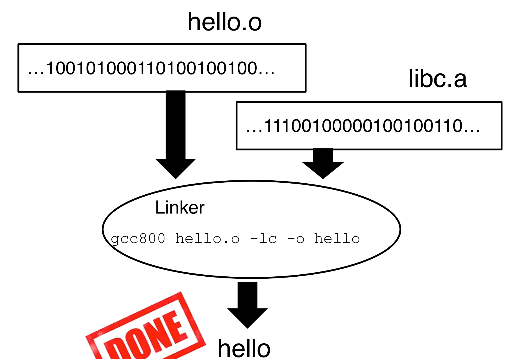
hello.o(…100101000110100100100…), 오른쪽은 표준 C 라이브러리인 libc.a(…11100100000100100110…)이며, 둘 다 사람이 읽을 수 없는 기계어 비트열로 표현되어 있습니다. 굵은 검은 화살표 두 개가 아래의 타원 “Linker”로 모이고, 타원 안에는 실행 명령 gcc800 hello.o -lc -o hello가 적혀 있습니다 — 여기서 -lc 옵션이 바로 libc를 함께 링크하라는 지시입니다. 타원에서 나온 화살표가 최종 산출물 hello를 가리키고, 옆의 빨간 “DONE” 도장이 이 지점에서 빌드가 완료됨을 나타냅니다. 이 그림의 요점은 §13–§15 내내 비어 있던 printf()의 정의가 libc.a 쪽 화살표를 타고 들어와 이제야 채워진다는 것입니다.완성된 hello를 실행하면 다음과 같습니다.
kyoungsoo93@mypc:~$ ./hello
hello, worldhello의 성격은 다음과 같습니다.
- 실행 파일(Executable)입니다.
- 기계어(Machine language)로 되어 있습니다.
libc.a는printf()함수(그리고 그 밖의 많은 함수들)의 기계어 정의를 담고 있는 라이브러리입니다.
printf()의 정의를 따라간 네 단계
| 산출물 | 형태 | printf() 선언 |
printf() 정의 |
|---|---|---|---|
hello.c |
C 소스 | 없음(#include만 있음) |
없음 |
hello.i |
C 소스 | 있음 | 없음 |
hello.s |
어셈블리어 | call printf로 참조 |
없음 |
hello.o |
기계어(오브젝트) | 미해결 참조로 남음 | 없음 |
hello |
기계어(실행 파일) | — | 있음(libc.a에서 합류) |
빌드 과정 전체를 “printf()의 정의가 언제 채워지는가”라는 하나의 질문으로 꿰면, 왜 단계가 넷이나 필요한지가 분명해집니다. 앞의 세 단계는 우리 코드를 기계어로 번역하는 일이고, 마지막 한 단계만이 밖에서 가져온 코드와 합치는 일입니다.
17. 전체 과정의 지름길 (Shortcut of All Processes)
지금까지 본 네 단계를 다시 한 장으로 모으면 §12의 그림과 같습니다. 다만 이번에는 가운데 위의 “Shortcut” 타원이 빨간색으로 강조되어 있습니다.
gcc800 hello.c -o hello이 한 줄이 전처리 → 컴파일 → 어셈블 → 링크를 모두 수행합니다. 평소에 우리가 치는 명령이 바로 이것이며, 지금까지의 §13–§16은 그 안에서 무슨 일이 벌어지는지를 단계별로 뜯어본 것입니다.
중간 산출물을 직접 만들어 볼 일은 흔치 않지만, 어떤 오류가 어느 단계에서 발생했는지 판단해야 할 때 이 구분은 실질적인 도구가 됩니다. 매크로가 이상하게 펼쳐졌다면 -E로 전처리 결과를, 생성된 코드가 의심스럽다면 -S로 어셈블리를 확인할 수 있고, “undefined reference to printf” 같은 메시지는 앞의 세 단계가 아니라 링커가 내는 것입니다.
18. gcc800과 gcc는 무엇이 다른가 (gcc800 vs. gcc?)
gcc800은 이 과목을 위해 만든 특별한 스크립트입니다.- 스크립트(Script)란 일련의 작업을 실행하는 명령들을 담은 텍스트 파일입니다.
gcc800은 부적절한 프로그래밍을 잡아내기 위한 여러 옵션을 추가합니다.- 예: 사용하지 않은 변수(unused variable)를 경고하거나, 초기화하지 않은 변수를 사용하는 경우를 경고합니다.
18.1 직접 만들어 쓰기
이 스크립트는 vscode 편집기(또는 원하는 어떤 편집기든)로 직접 만들 수 있습니다.
emacs gcc800파일의 내용은 두 줄입니다.
#!/bin/bash
gcc -Wall -Werror -pedantic -std=c99 "$@"- 개인 컴퓨터에서는 이 작업이 필요합니다. 실습실 장비(Lab machines)에는 이미 설정되어 있습니다.
- 스크립트에 실행 권한을 부여합니다.
chmod +x gcc800- 어디서든 접근할 수 있는 폴더로 파일을 옮깁니다.
sudo mv gcc800 /usr/bin/gcc800첫 줄 #!/bin/bash는 셔뱅(shebang)으로, 이 파일을 실행할 때 어떤 해석기를 쓸지 운영체제에 알려 줍니다. 둘째 줄 끝의 "$@"는 스크립트가 받은 인자를 그대로 gcc에 넘기라는 뜻입니다. 그래서 gcc800 hello.c -o hello라고 치면 실제로는 gcc -Wall -Werror -pedantic -std=c99 hello.c -o hello가 실행됩니다. 옵션의 의미는 각각 -Wall(대부분의 경고를 켠다), -Werror(경고를 오류로 취급해 컴파일을 실패시킨다), -pedantic(표준에서 벗어난 확장 문법을 경고한다), -std=c99(C99 표준을 따른다)입니다. 특히 -Werror 때문에 경고를 남겨 둔 채로는 빌드 자체가 되지 않으므로, 이 과목에서는 경고를 “나중에 볼 것”으로 미룰 수 없습니다.
정리하며 (Closing Remarks)
이번 강의의 논리 사슬을 한 장으로 요약하면 다음과 같습니다.
| 단계 | 내용 | 근거 |
|---|---|---|
| ⓪ 전제 | C는 Unix를 만들려고 설계된 저수준 언어이며, 이식성보다 효율성을 택했다. 변수·문장·함수라는 최소 문법이 여기서 갖춰진다 | Overview of C Programming Language |
| ① 문제 1 | 표준 입력에서 알파벳·숫자·기타 문자의 개수를 센다 | C Example Code #1 |
| ② 첫 번째 함정 | EOF는 (int)-1이므로, 문자를 담는 변수는 char가 아니라 int여야 정상 문자와 구별된다 |
//EOF == (int)-1 == 0XFFFFFFFF |
| ③ 비교의 근거 | 문자와 정수를 비교할 수 있는 이유는 문자 집합이 정수 코드이기 때문 | ASCII: a Popular Character Set |
| ④ 나쁜 코드 | ASCII 산술은 대소문자 변환까지 해내지만 코드표 없이는 읽을 수 없다 | Program using ASCII characteristics |
| ⑤ 1차 개선 | 97 → 'a'. 가독성은 얻었으나 ASCII 의존은 남는다 |
문자 리터럴 버전 |
| ⑥ 2차 개선 | isalpha() / isdigit(). 문자 집합에 중립적이 된다 |
<ctype.h> 버전 |
| ⑦ 문제 2 | 단어의 개수를 센다 — 코드보다 알고리즘을 먼저 설계한다 | C Example Code #2 |
| ⑧ 설계 도구 | 상태 2개(IN/OUT)의 DFA. 단어 수 = OUT→IN 전이 횟수 | Figure 7 |
| ⑨ 일반성 확인 | 같은 도구로 문자열 검출(“SNUCSE”)과 정수 검출도 표현된다 | Figures 8–9 |
| ⑩ 구현 1 | switch(state)로 옮기면 0/1이 매직 넘버로 남는다 |
매직 넘버 버전 |
| ⑪ 구현 2 | enum / #define / const로 상수에 이름을 붙인다 |
3 Ways to Represent Named Constants |
| ⑫ 구현 3 | 함수 주석(what)과 default: assert(0)(방어적 프로그래밍)을 더한다 |
Comment on Function |
| ⑬ 관점 전환 | gcc800 hello.c -o hello는 사실 네 단계의 지름길이다 |
Figure 10 |
| ⑭ 단계별 산출물 | .i(선언만 채워진 C) → .s(어셈블리) → .o(기계어) → 실행 파일 |
Preprocess / Compile / Assemble |
| ⑮ 링커의 역할 | 내내 비어 있던 printf()의 정의가 libc.a에서 합류한다 |
Figure 11 |
| ⑯ 도구의 정체 | gcc800은 gcc -Wall -Werror -pedantic -std=c99 스크립트 |
gcc800 vs. gcc? |
개인적인 감상 몇 가지를 덧붙입니다.
- 가장 인상적인 구성은 §2.2의 코드를 세 번에 걸쳐 고쳐 쓰는 대목입니다. 세 버전은 ASCII 환경에서 완전히 같은 출력을 냅니다. 즉 강의는 “틀린 코드를 고친다”가 아니라 “맞는 코드를 더 좋은 코드로 바꾼다”를 보여 주는데, 이것이 훨씬 어려운 교육입니다. 초보자에게 코드 품질은 대개 “동작하느냐”로 환원되기 때문입니다.
97에서'a'로, 다시isalpha()로 옮겨 가면서 무엇이 개선되고 무엇이 그대로인지를 매번 명시한 덕분에, 가독성과 이식성이 서로 다른 축이라는 사실이 자연스럽게 드러납니다. getchar()가int를 반환하는 이유를 첫 예제의 첫 줄에서 던진 것도 좋은 선택입니다. 이 질문은 언뜻 사소한 타입 문제처럼 보이지만, 실제로는 “표현 가능한 값의 공간이 유한하고, 그 안에서 특별한 의미를 갖는 값을 하나 떼어 오려면 공간을 넓혀야 한다”는 시스템 프로그래밍의 반복되는 주제입니다. 앞으로 만날 오류 반환값, 센티널 값, 널 포인터가 모두 같은 구조의 문제입니다.- DFA를 “이론”이 아니라 “설계 도구”로 도입한 점이 특히 실용적입니다. 단어 세기는 상태 없이도 몇 줄이면 짤 수 있는 문제이고, 그래서 굳이 오토마타를 꺼낼 이유가 없어 보입니다. 그런데 §10의 한 줄 — “현재 상태 + 입력 문자 = 다음 상태 + 출력” — 을 보면, 강의의 목적이 이 문제를 푸는 것이 아니라 문제를
switch문으로 기계적으로 번역할 수 있는 형태로 바꾸는 절차를 가르치는 것임이 분명해집니다. Figure 8–9에서 훨씬 복잡한 패턴 검출을 같은 도구로 표현해 보인 것도 그 때문일 것입니다. - 빌드 과정을
printf()하나로 꿰어 설명한 구성도 인상적입니다. §13–§16의 네 슬라이드에는 매번 “Missing definition of printf() function”이라는 같은 문장이 반복해서 등장하고, 마지막 §16에서야libc.a화살표와 함께 사라집니다. 컴파일 단계를 단순히 나열했다면 외워야 할 목록이 되었을 텐데, “이 구멍은 언제 메워지는가”라는 질문을 앞세운 덕분에 각 단계가 필연으로 읽힙니다. - 남는 아쉬움도 있습니다. §14의 어셈블리 예시는 32비트 x86(
%ebp,%esp)을 전제하고 있어, 오늘날 대부분의 실습 환경인 x86-64와는 레지스터 이름도 호출 규약도 다릅니다.puchl같은 표기 오류도 그대로 남아 있고요. 물론 이 슬라이드의 목적은 “컴파일러의 출력은 대략 이런 모습”을 보이는 데 있으므로 큰 문제는 아니지만, 직접gcc800 -S를 실행해 결과를 비교해 보려는 독자라면 눈앞의 출력과 슬라이드가 꽤 다를 수 있다는 점을 미리 알아 두는 편이 좋겠습니다.